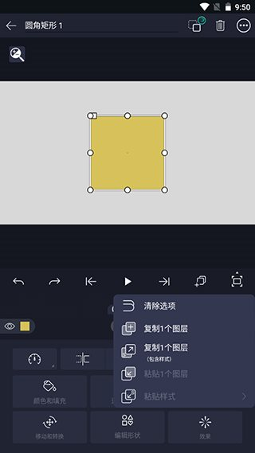
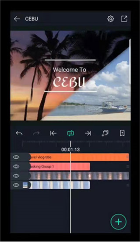

AMLS 新手入门：手机上也能剪出像样的视频——从零到会用只要五分钟
第一次碰 AMLS 不知道从哪下手？这篇带你走完下载安装到导出第一条视频的完整流程，顺便搞懂三个新手最该先碰的功能，以及遇到问题时该去哪查。
这篇文章能带你从完全不懂视频剪辑到用 AMLS 剪一条像样的短片，不需要任何基础——如果你之前只刷过视频没做过视频，看完也能上手。
它到底是干嘛的？一个生活化类比
AMLS 是安卓平台上的一款手机视频剪辑工具——去它的官网看看功能列表，说人话就是：把你手机里拍的视频、照片、音频拼在一起，加上文字、转场和特效，导出成一条完整视频。
你可以把它想象成手机版的 Photoshop，但是剪的是视频不是图片。在 AMLS 里，每一段视频、每一张照片、每一行文字，都是独立的一层——像叠披萨一样叠在一起。上面那层盖住下面那层，你想让哪个出现在画面里就把它放在上面。

图层面板就是 AMLS 的控制面板，所有素材都列在右侧。眼睛图标点一下可以隐藏某个图层，锁图标点一下可以把调好的图层锁住防止误改。别看面板里一堆行，其实每一行就代表画面里的一个元素，想调谁点谁。
五分钟上手：从下载安装到第一次跑通
好，不说虚的，现在就动手。跟着下面四步走，五分钟内你就能导出第一条视频。
第一步：下载安装
安装包从官方下载拿，安装到手机上。安装时系统可能会提示"允许访问文件"，点允许就行——不然后面导入素材会找不到文件。
第二步：新建工程
打开 AMLS，首页是工程列表。点右上角的加号新建一个项目。
这时候会让你选画布比例：竖屏视频（9:16，适合发抖音/快手）、横屏视频（16:9，适合发 YouTube/B站）、正方形（1:1，适合发朋友圈）。第一次玩建议选 16:9 横屏，后面改也很方便。
第三步：导入素材
进到编辑界面后，点下方的导入按钮，从手机文件里选一段你拍的视频。选完它会自动出现在时间轴上——时间轴在底部，是一根横向的时间线，素材就是贴在线上的片段。
可以再导入几张照片、一段背景音乐，让内容丰富一点。每个导入的东西都会变成独立的图层出现在右侧图层面板里。
第四步：预览和导出
点右下角的播放按钮预览一下效果。满意了就点右上角的导出按钮，选好分辨率（1080p 就够了），等几十秒——AMLS 会把所有图层合成成一条 MP4 视频保存到你的手机。
恭喜，你已经完成了第一条视频的剪辑。
上手后先玩这三个功能
跑通第一次之后，别急着关掉，试试下面这三个功能——新手阶段把这几个摸透，后面的创作效率会翻倍。
功能一：图层面板的命名和分组
AMLS 默认用素材文件名当图层名，比如导入一段叫 video_20241001.mp4 的视频，图层面板里就显示这个名字。素材多了之后一堆乱码一样的文件名，找起来很痛苦。
点一下图层名可以直接重命名。建议养成这样的命名习惯：
- 场景1-主视频
- 场景1-字幕-标题
- 场景1-背景音
十个以上图层后，图层面板会变得很长。这时候可以用分组功能——把相关的图层归到同一个组里，折叠后面板清爽很多。分组不会影响图层的叠加顺序，纯粹是管理用的。
功能二：元素库——一次创建永久复用
如果你做过一个满意的开场动画、一段常用的转场效果、或者一套调好的文字动效，别每次从零搭建。AMLS 的元素库能把这些保存下来，下次新建工程时直接拖进去用。
长按图层面板里的目标图层或分组，选择"保存为元素"，起个名字（建议加前缀，比如 [开场]品牌介绍），存到元素库里。以后打开新工程，点左下角的笙图标进入元素库面板，找到你存的那个元素，点一下就自动加到时间轴里了。

元素库和 AMLS 内置的预设不一样——预设是官方做的几十种通用效果，而元素库是你自己攒的、完全符合你创作习惯的模板，可以一直攒没有上限。
功能三：项目包导出——跨设备继续编辑
你可能在手机上剪到一半，想换电脑继续？或者做完了想发给朋友一起改？AMLS 的项目包功能就是干这个的。
回到工程列表，长按目标工程的卡片，选择"导出项目"。推荐选 .ampkg 格式——这是打包版，把工程文件和所有素材（视频、图片、音频）一起打包进去，一个文件就是一整套。
导出后通过微信、QQ 或者网盘传给对方，对方收到后用文件管理器找到这个 .ampkg 文件，选择"用 AMLS 打开"，所有图层、时间轴、特效参数都会完整还原——不像发 MP4 只能看不能改，关于项目包格式、版本兼容等进阶细节，可以去 AMLS 的文档翻。
小白的三个常见疑问
导入视频后黑屏或花屏怎么办？
最常见的原因是视频编码不兼容。很多安卓录屏、某些 APP 导出的视频用了 AMLS 不支持的编码格式。解决办法很简单：用 HandBrake 或格式工厂这类转码工具，把视频转成 H.264 MP4 格式，分辨率降到 1080p 以下，帧率保持 30fps 或 60fps，再重新导入就好了。
格式兼容速记：视频优先 MP4 (H.264)，图片优先 PNG 或 JPG，音频优先 MP3 320kbps。MKV、AVI、FLV 这些格式 AM LS 不支持，需要先转码。
图层太多找不到怎么办？
三种办法：图层面板顶部有搜索框，输入关键字实时过滤；可以给图层设置颜色标签，按颜色分组查找；或者把相关图层归入同一组，折叠后面板更清爽。十个以上图层就开始用分组，养成习惯后面不会乱。
朋友收到项目包打不开？
按顺序排查：朋友有没有安装 AMLS 凉笙版？版本是不是够新（太老的版本可能打不开新版文件）？文件是不是真的 .ampkg 格式（有时候会误把 MP4 当项目包传）？文件传输过程中有没有损坏（让对方重新下载一次试试）。如果工程用了自定义字体，朋友那边还需要先安装相同字体，否则文字会变形。
下一步去哪找更多玩法
这篇只带你走完了第一次剪辑的最短路径。如果你想深入了解参数调整、关键帧动画、遮罩分组这些进阶玩法，可以去 AMLS 的文档站翻一翻——里面有图层变换、高阶动效、问题排查等完整的教程。
祝你剪出自己满意的第一条视频。
这套 AMLS 的使用资料我在 GitHub、Gitee、GitCode 三个平台的仓库里都同步维护了一份，方便不同网络环境下查阅和下载。